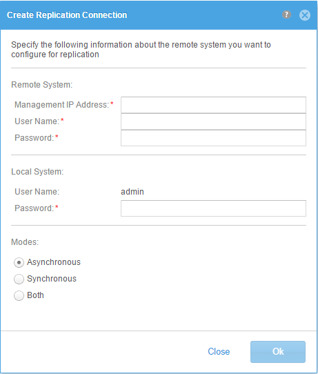
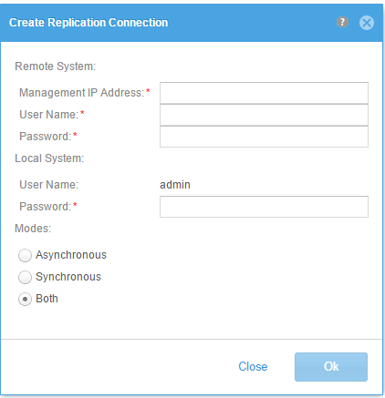
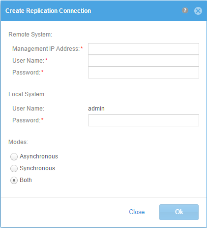
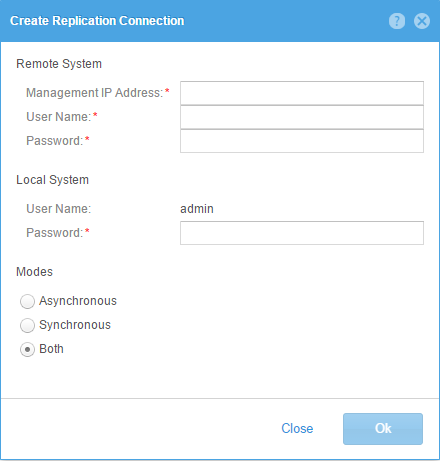
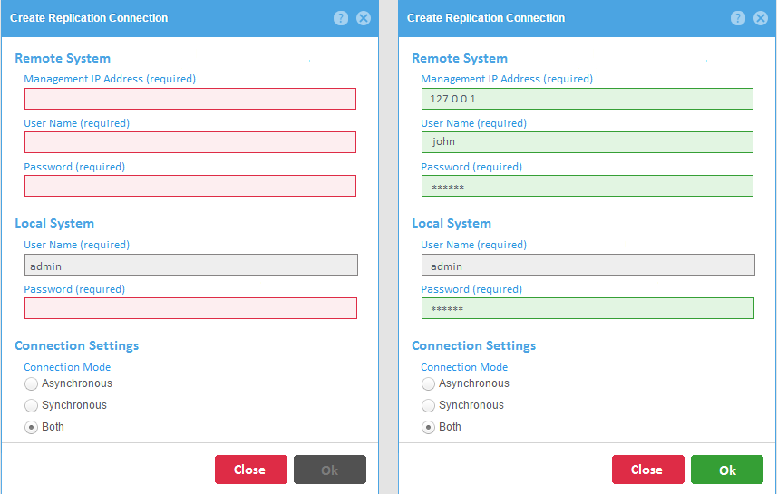

Implementation Review Case Study
After a GUI developer implements a design, I typically review the implementation. In this case we went through a few iterations to improve a simple dialog.
One of my design principles minimalism - less is more. Basically reducing the design to only the most essential elements. As Jakob Neilsen says "Every extra unit of information in a dialogue competes with the relevant units of information and diminishes their relative visibility."
Design 1 wasn't bad, but the horizontal rulers tend to draw attention away from the important information.
Design 2 removed the separators, but everything was pushed up against each other making it hard to separate source from destination.
Design 3 added 20 pixels of padding between the two sections - much better.
Design 4 removed the colons from the section labels - providing a cleaner look and distinguishing these from normal input field labels.
Design 5 added the default padding between controls and increased the font to 12 pixels for the section labels.

Design 6 was an alternate exercise putting labels above the input fields and using border and background colors to indicate form validation. Also the red asterisk was replaced by "(required)".
We decided that the top aligned labels made the form vertically longer and harder to skim the form for required input. Using the full term (required) just created more clutter.
We also decided to stick with the white background for input fields and highlighting the field in a red border with a tooltip for any validation errors.